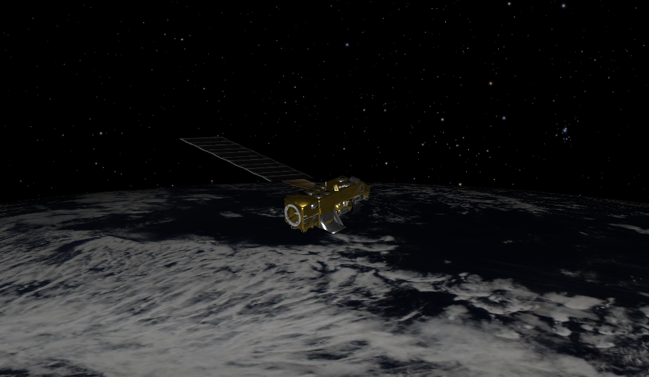

Satellite 1 - Earth Observation
Satellite 1 is designed for high-resolution Earth observation.
It captures detailed images of landscapes, oceans, and cities,
supporting applications in agriculture, climate monitoring,
and disaster management. Launched in 2023, it provides valuable
data for both scientific research and government planning.